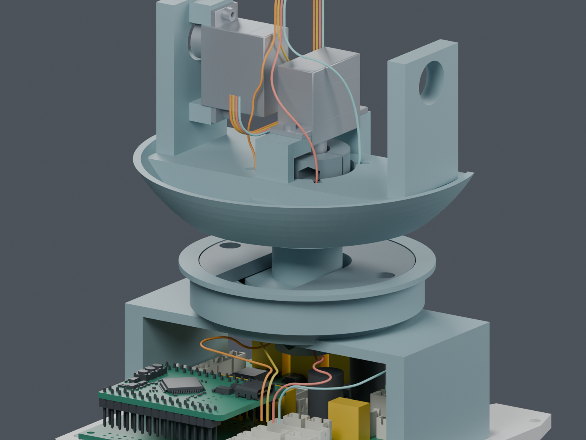
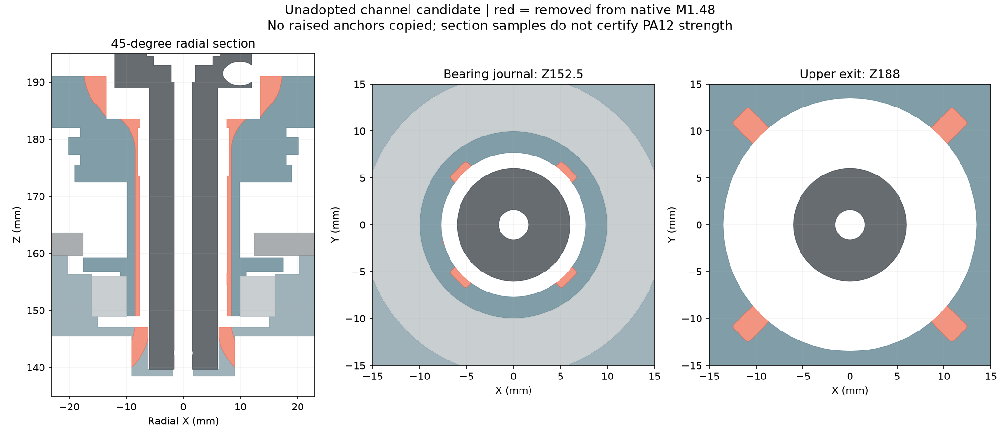

四根 CAM 候选已接通，完整线束还未完成
本次完成连续路线的数字检查。 路线使用两件独立的颈部通道候选，尚未应用主模型。固定、带线装配、另 7 根跨关节线和 FFC 仍待完成，完整线束为 BLOCKED。

从基板 J5 到 CAM 出线预留位置的四根候选。部分实体在图中隐藏，检查时仍包含；末端不是已经确认的实物插合模型。
这次检查通过的范围
| 检查 | 当前结果与范围 |
|---|
| 实体间隙 | PASS · 以当前 209 件实体为基础，仅替换两件候选；包含 29 个对插包络及 14 根已有候选线。 |
| 头部姿态 | PASS · 偏航 −60°～+60°、俯仰 −20°～+25°，130 个组合姿态，共 520 条线路记录。 |
| 线间与自接近 | PASS · 780 组线间、520 组非局部自接近检查；线间保守下界最小 0.300060 mm，要求 0.3 mm。 |
| 弯曲半径 | PASS · 匹配到原数学曲线的名义最小半径 7 mm，要求 6.9342 mm。未模拟导线弹性、磨损或寿命。 |
| 固定与整套装配 | NOT_TESTED / BLOCKED · 当前候选的固定、端子装入和完整带线装配尚未完成。 |
线径保持 0.6604 mm；检查没有调小线径或降低间隙要求。细化了粗采样不能判定的区间，仍保留曲线误差与数值余量。姿态本身是离散检查，不能据此保证全部连续运动。
两件通道尚未批准
Yaw_Base、Pitch_Yoke 分别移除约 124.8、436.5 mm³ 材料。没有增加打印件、紧固件，也没有带入旧候选的凸起固定座。
轴颈采样最薄壁从 2.25 mm 降至 1.48 mm。 这是需要进一步复核的结构代价，不能仅凭导线放得下就采用。采样覆盖 17 个截面、各 720 个方向，不是全件壁厚或强度认证。

红色表示相对主模型移除的材料。两件候选都是单个连通实体；制造导出和强度尚未放行。
距离到货前工作完成，还剩五类
| 类别 | 未完成内容 |
|---|
| 完整线束 | 固定、应力释放、完整带线装配；另 7 根跨关节线与 FFC，最终裁线图。 |
| 反力夹初装 | 夹口薄边、工具与装入路径，需要结合最终舵盘接口完成。 |
| 采购件及安装 | 软轮胎定型，以及充电、制动部件与真实出线的安装和维护。 |
| 供应商接口资料 | SCS0009 配套舵盘/轴/锁紧；S288 螺钉、WeAct 插接、CAM/FFC/压接配套资料。 |
| 质量与驱动预算 | 当前名义质量约 1.324 kg，高于 1.0～1.2 kg 工程目标，且完整线束等尚未计全。 |
目前还不是“只等实物”。主模型仍为 M1.48；这次候选未进入正式 STL 或装配动画。插合包络与出线细节含估计，几何通过不等于实物装配合格。本页不提供供应商裁线尺寸。
独立 Blender头部路线近景完整说明完整状态记录
原始检查与来源
实体与姿态线间检查曲率与来源拓扑与壁厚实体差异文件哈希交付核对
早期失败报告保留作为过程记录，当前结论以这五份报告为准。相同曲线的数学证据可复用，旧实体间隙结果没有直接沿用。